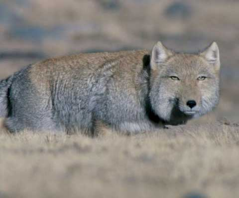

Who am I

무뚝뚝해 보이지만 알고 보면 유쾌한 사람
About Me
인구 13만 명의 소도시에서 태어나 스무 살에 서울에 올라왔습니다. 대학 시절 이런 저런 활동을 하다 보니, 포토샵 일러스트레이터 나모웹에디터까지... 자꾸 처음 보는 프로그램들을 배우게 되었습니다. (물론 초보자 수준이지만요) 2015년 디지털퍼스트팀을 거치며 영상 편집에 도전해보기도 했습니다.
세상 온갖 잡기를 좋아해 얕고 넓게 배우는 걸 좋아합니다. 엄청나게 잘 하는 건 없지만 못 하는 것도 없습니다. 물론 업무에서만큼은 최고가 되고 싶습니다.
Details
이름..권기범
생일..1984년 8월 15일(광복절!)
특징..갈매기 눈썹, 티벳여우급 무표정
특이사항..클릭해서 확인하기
Coming in June!
Ability
잘먹음
..
-못 먹는 것 빼고는 다 먹습니다. 남김없이.
가창력
..
-노래방 사장님 아들 출신
손재주
..
-악기부터 콘텐츠까지.. 만드는 것 만지는 거 다 좋아합니다.
(물론 잘한다고는 안 했습니다)
아재력
..
-그래도 30대 치고는...
1년간
잘 부탁드립니다!